通用操作系统原理之虚拟内存
理论驱动实践，实践驱动理论。
虚拟内存问题概述
如果你了解过一点虚拟内存的知识，这篇笔记可能会让你更深入的理解。
- 三个内存相关的问题
- 没有足够的内存
- 地址空间碎片化
- 地址冲突
- 什么是虚拟内存
- 中间件
- 如何解决三个内存问题
- 页表和转换
- 如何实现虚拟内存
- 怎么让转换变得更快
- 虚拟内存和高速缓存Cache
三个内存相关的问题
- 没有足够的内存怎么办
MIPS提供给每个应用程序32位的地址空间，每个应用程序可以访问这32个地址空间中的任意一个字节。最早的MIPS架构是32位，最新的版本已经变成64位。也就是说你可以使用2^32bytes也就是4GB，这只是理论上，实际可能会缩小到2GB可用空间。
如果你的物理内存（内存条）是1GB该怎么办呢？就像下面这个图，可寻址空间大于实际物理内存大小。
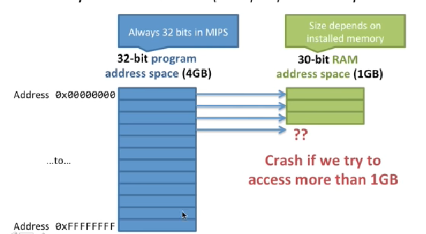
- 程序如何分配内存（对于碎片内存）
就像下面这张图，首先内存加载程序p1和p2，开始3G空间被占用，剩余1G空间剩余，这时候p1退出，p3想使用内存，虽然还有2G剩余空间，但空间是碎片化的，这也是一个问题。这被称作Memory fragmentation内存碎片化。
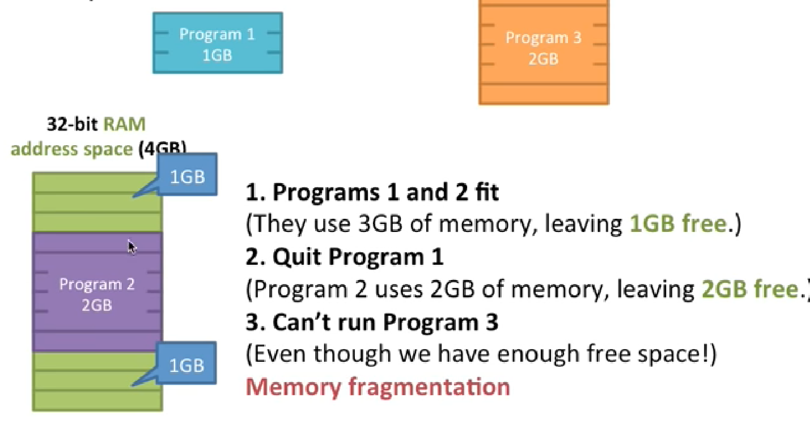
- 如何保证进程安全（进程之间地址不相互访问）
就像下面这张图，两个程序同时访问1024这个地址的空间，内存中的信息会不会相互覆盖？
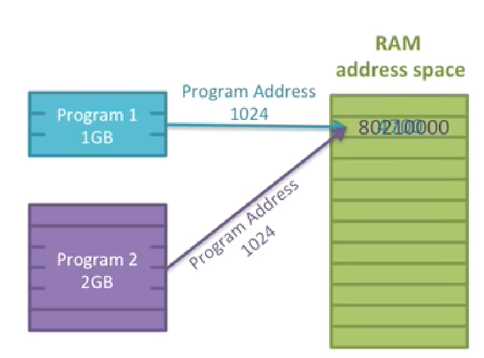
总结一下，如果所有程序都有相同的32位的寻址空间，那么可能导致以下问题：
- 如果实际物理能存大小小于4GB电脑可能会崩溃
- 如果运行多个程序可能会用光所有内存，这不是真正的用光而是碎片化的内存无法真正利用，这种碎片化依赖于我们不同程序的运行次序
- 不同的进程之间的数据可能会相互覆盖破坏，因为有相同的寻址地址
那么如何解决？
问题的关键在于所有的程序有相同的寻址空间，那么我们可不可以有属于自己的虚拟内存？如果可以的话，我们可以
- 将程序的内存空间和物理内存之间做一个映射（这使得我们使用物理内存RAM变的更加灵活）
- 当程序用光的时候，我们甚至可以将程序移动到硬盘
什么是虚拟内存
中间件
虚拟内存是一层“中间组件”，虚拟内存的想法来自于一句话：
Any problem in computer science can be solved by adding indirection.
任何计算机问题都可以通过添加一个中间件来解决。
如果没有虚拟内存这一层中间件，程序寻址空间将和实际物理内存相同。例如寻址空间大小大于实际RAM大小，如果你访问地址2024，得到的结果可能和访问地址24相同（因为地址越界最高位失效）。
虚拟内存的作用就是将程序地址空间做一层映射映射到实际RAM地址。
如下图所示：
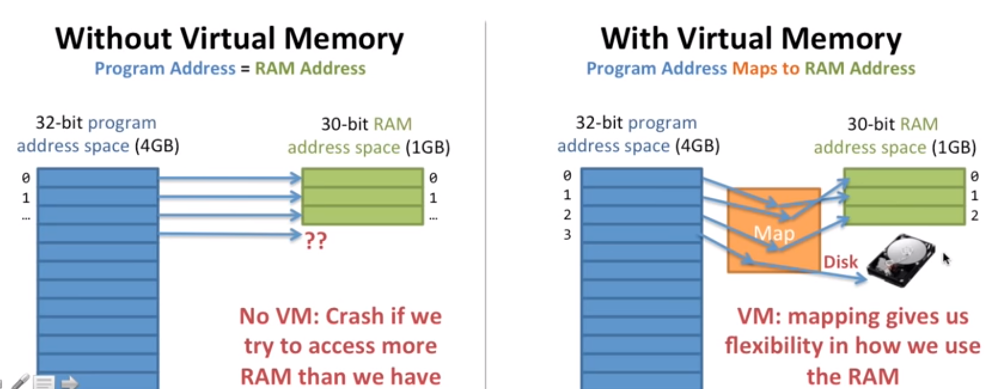
如何解决三个内存问题
- 没有足够的内存
将一部分程序地址空间映射到硬盘，我们需要他的时候只需要将这一部分加载到内存中即可。内存中的暂时不使用的程序（比如Program0）可以将其放到硬盘中，这个过程叫做Page Out，即内存页换出，并更新映射，然后当新程序（P3）来了就可以映射到内存中原来旧程序（P0）部分。
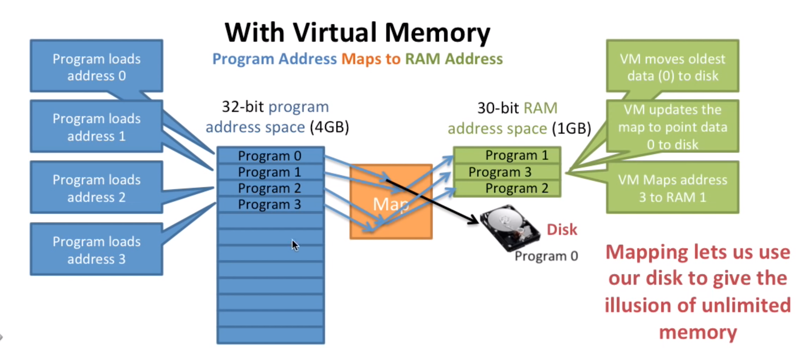
- 碎片内存使用
这就是前面提到过的问题，如何充分利用程序退出后碎片化的内存？
有了前面提及的映射，这个就比较容易解决了，我们可以将地址空间按照任意方式映射到实际物理内存RAM
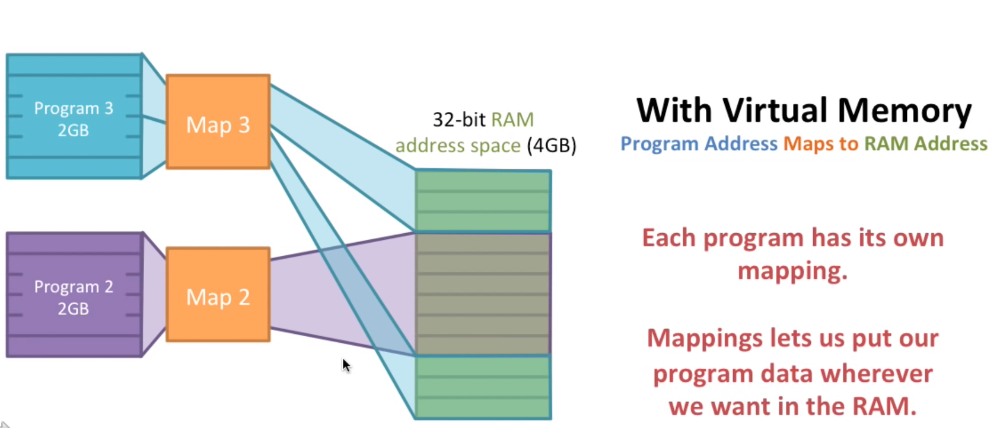
- 进程安全（进程之间不相互访问）
进程之间的内存如何能够独立、隔离（isolate）出来呢？例如同时访问1024的地址，两个程序如何能保证不是访问的实际物理内存中的同一个区域呢？
通过映射方式我们可以想出来，只需要保证不同程序的相同虚拟地址映射到不同的物理地址就可以了。
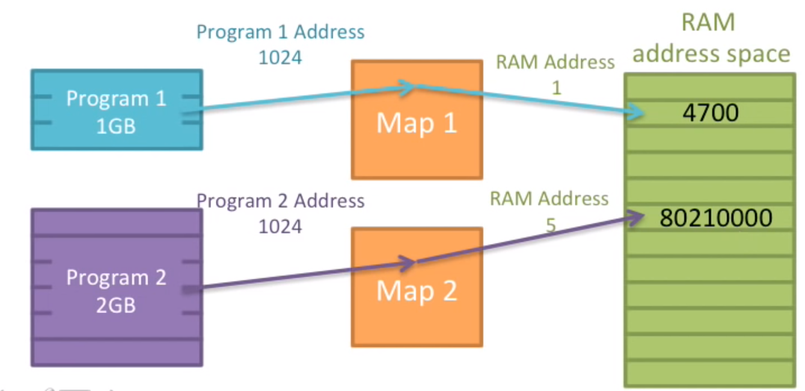
这样一来，因为每个程序都有自己的地址空间，那么他们不可能访问其他程序的数据，这非常的安全和可靠！
这也是有缺点的，当两个程序合作的时候，如何共享内存呢？只需要将两个程序各自的虚拟地址空间拿出一部分映射到相同的物理地址空间。
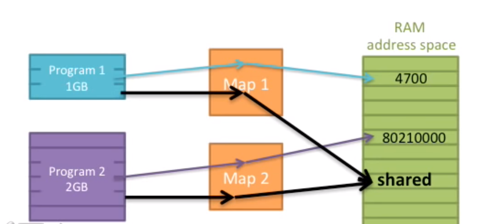
页表和转换
前面一直提到的映射就是页表的部分，页表所做的功能就是转换，从VA（Virtual Address）虚拟地址转换为PA（Physical Address）物理地址。页表映射的单位是一个页。
那程序是如何访问内存的呢？
- CPU执行使用虚拟地址。
- MMU将虚拟地址转换成物理地址
- （可选）如果转换过程中发现映射表中没有物理内存，那么操作系统就将它从硬盘加载到内存并修改映射表
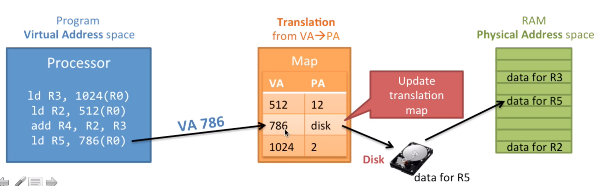
- 通过物理地址读取RAM并将数据返还给程序。
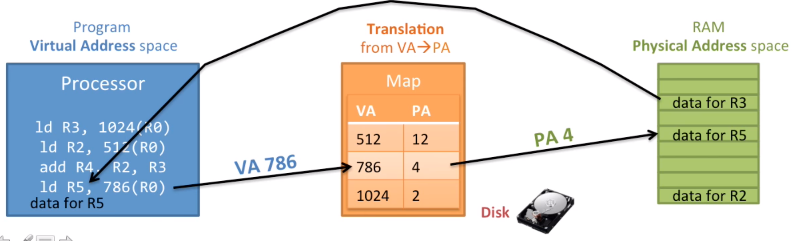
页表
页表保存着VA虚拟地址到PA物理地址的映射方式。
下面一步一步说明页表的构建过程，从有问题的页表到一个臻于完美的页表，这可能是现代计算机操作系统所利用的机制。
既然页表保存着虚拟地址到物理地址的映射，那么页表就需要保存每一个虚拟地址到每一个物理地址的映射，我们称每一条记录为页表入口Page Table Entry (PTE)。如果是这样的话，那需要多大的页表？结合下图：如果是32位地址空间，每个字就需要1个PTE，这里一个字是32位，也就是4个字节，所以每4个大小也就是2位的地址空间就需要1个PTE，所以总共需要2^30个PTE。又因为每个PTE存储的是一个映射，由于虚拟地址是连续的可以只用偏移地址来表示，只需要存32位的物理地址，所以总共需要2^30x32b=4GB个大小。这说明1个4GB大小的RAM我们就需要拿出全部容量来存储页表，而且这没有考虑每个程序都需要一个页表。如果你没有明白这个计算公式，你仅需要知道如果这样构造页表所需容量太大，需要改造！
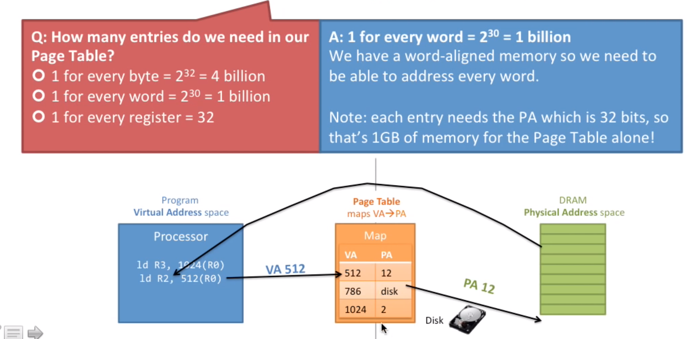
那么如何改造呢？以上情况的映射是1个字对应一个PTE页表入口，我们称这种情况为细粒度映射，那我们可不可以使用粗粒度映射呢？就像这个图一样：
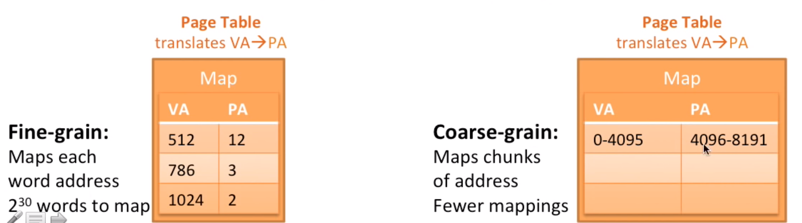
这个图中，我们将每4Kb大小的地址空间做一个PTE，我们称之为4KB Pages，因为每个RAM按字节计量，或者你可以看为1K个字大小的页。这样我们就减少了映射也就是PTE的个数。这4KB大小的页映射的内部是连续的，如下图：
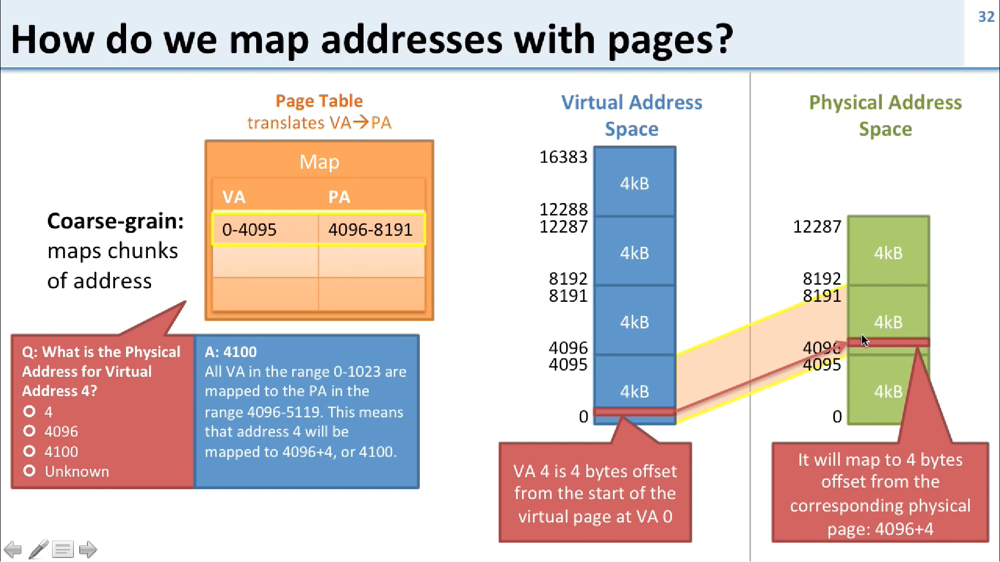
有了以上改进，我们有了更少的PTE映射个数，但是我们页降低了使用RAM的灵活性，因为我们每次需要移动一个页（4KB）。
现代计算机系统中，比较典型的就是4KB Pages（1024 words per page，每一页1024个字）。
地址转换
我们需要将虚拟地址转换为物理地址。
假设我们使用的是4KB Pages，我们有32位虚拟地址，28位物理地址，如下图
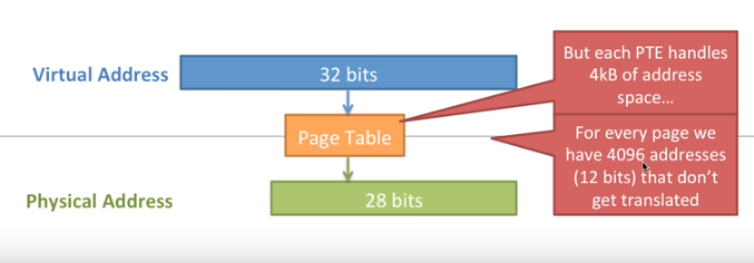
那我们4KB大小的页内部没有做映射，这一部分如何映射呢？解决办法就是使用偏移量offset，如下图
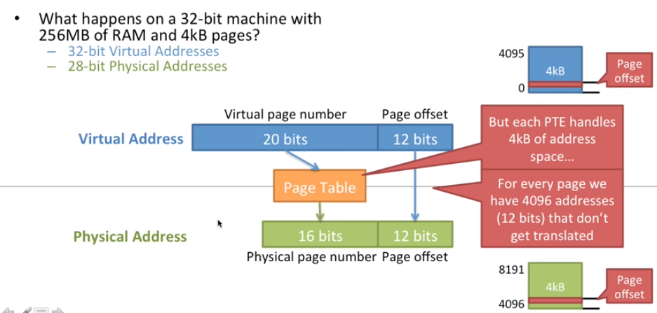
我们将一个虚拟地址转换为物理地址，虚拟地址的pagenumber部分通过页表转换为实际物理地址的pagenumber部分，虚拟地址的offset部分直接作为物理地址的offset部分。
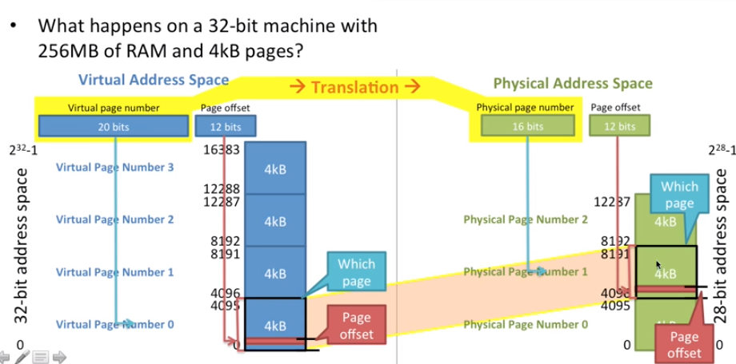
下面这个例子，32位虚拟地址，28位物理地址，4KB大小的页，所以需要12位offset。当虚拟地址为0x00003204的时候，将虚拟地址分为虚拟页编号（0x00003）、偏移量（0x204），offset直接使用，所以物理页内偏移量为0x204，虚拟页编号通过查页表，得到物理页编号为0x0006。所以得到的物理地址为0x0006204
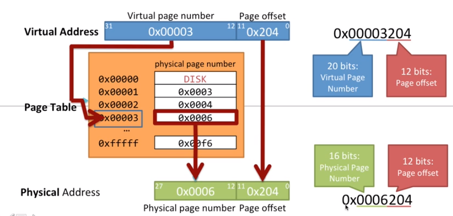
当然，如果查页表的时候可能会产生page fault，即所需要的内容没有在RAM中，如图中的0x00000，这就需要发生中断，加载内容到RAM，然后修改页表，返回到内存上次执行的位置，这时候就会找到所对应的物理页编号了。
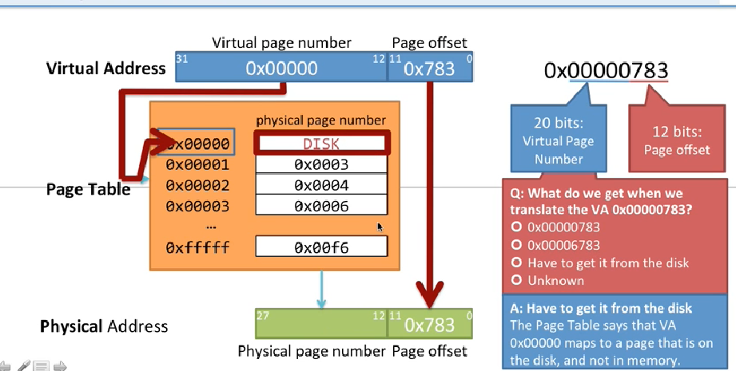
详细说一下当所需要的页不在内存中时会发生什么：
- 页表入口PTE告诉你所需要的页在硬盘中
- 硬件（CPU）生成一个Page Fault页错误
- 硬件跳到Page Fault Handler页错误处理程序来处理
- 操作系统选择RAM中的一个页剔除写到硬盘中
- 如果是需要读取的页是脏页，就需要先将其写回到硬盘再读取
- 操作系统读取所需要的页到RAM
- 操作系统修改页表的映射
- 操作系统跳转到发生页错误的地方开始执行（这一次就不会产生页错误了）
脏页是指页中的数据被改变了，如果没有改变，那就没必要写回到硬盘了。
脏页－linux内核中的概念，因为硬盘的读写速度远赶不上内存的速度，系统就把读写比较频繁的数据事先放到内存中，以提高读写速度，这就叫高速缓存，linux是以页作为高速缓存的单位，当进程修改了高速缓存里的数据时，该页就被内核标记为脏页，内核将会在合适的时间把脏页的数据写到磁盘中去，以保持高速缓存中的数据和磁盘中的数据是一致的。（来自百度百科）
那么页不在内存中时，这个过程需要多长时间呢？大约需要80 million 周期，这是采样自现代CPU，其中硬盘的读取占了大多数时间。页错误可能是计算机中最慢的操作了。
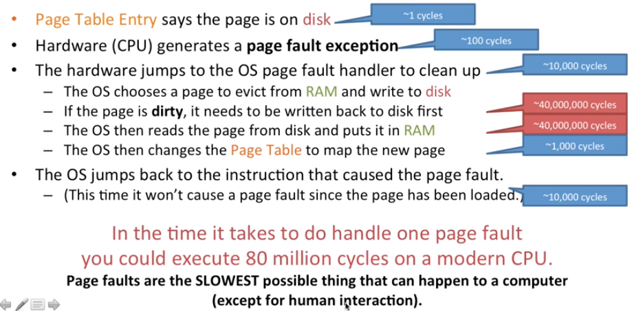
既然这么慢，那为什么还要用它呢？
优点：
- 你用光了内存计算机不会发生崩溃
缺点： - 如果发生页错误会很慢
但是现代计算机还是使用内存页机制。如果你有非常大、足够大的RAM就不会发生页置换，这就是我们为什么认为内存越大计算机就变的越快的原因。
足够大的内存这是不可能的，不过一些现代操作系统不会发生页置换：
- IOS：如果你用了过多的内存，系统会杀死你的进程
- OS X 10.9：系统会先压缩你的程序，只有不得不置换的时候才会发生
这可能就是为什么在国内Apple比较受欢迎的原因吧，o(￣︶￣)o
每个程序都有自己的页表，我们可以把每个程序的虚拟地址映射到独一无二的内存中，这是为了程序之间不会没有预测的访问数据。
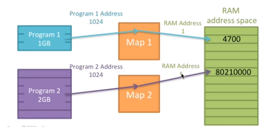
这说明每一个程序都有自己的32位虚拟地址空间，下面是Linux虚拟内存空间的使用情况。
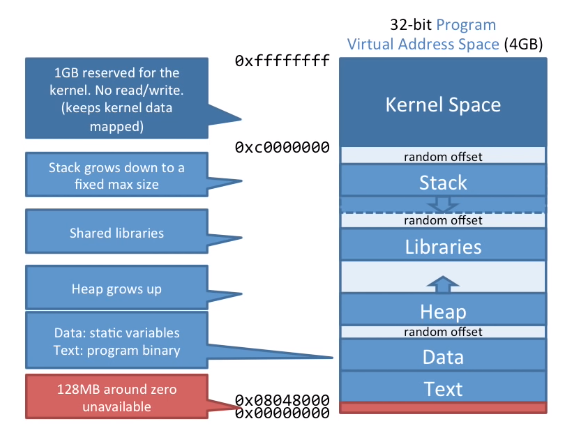
1GB预留给linux内核作为内核区，栈区可以向下扩展到一个固定的最大值，Libraries区用于一些共享库的放置，堆区用于存储动态申请的内存向上扩展，接下来是data数据区用于存储静态变量，代码区用于放置程序编译之后的二进制代码。这之间有一些随机的偏移，这提高了安全性因为你不知道数据和代码区具体在哪儿。
这是一个具体的例子。
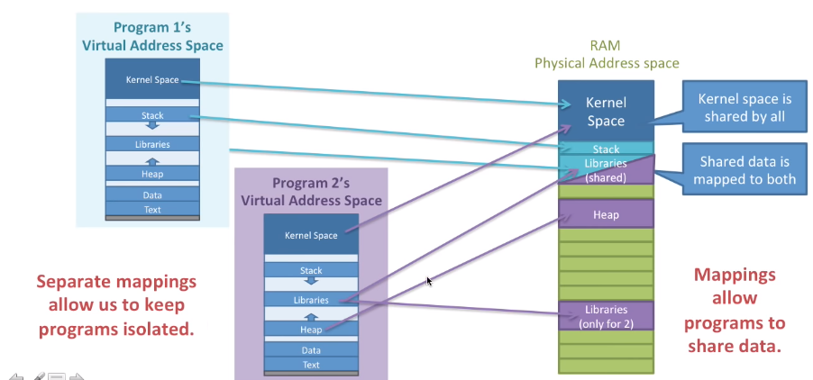
每个程序都有自己的虚拟地址空间，都有自己的页表映射方式保证了程序之间的隔离，因为不会随意相互访问内存，映射到内存的相同区域保证了程序之间的可合作性。
看一看实际如何使用独立的页表映射方式。这儿有两个程序，CPU都要执行这段指令ld R2,2(R0)，就是将内存地址2的数据加载到R2寄存器中，这里的内存地址是虚拟地址，因此需要通过查页表的方式来查询实际物理内存地址，然后取出数据。因为两个程序有不同的页表，执行指令时取得的虚拟地址2对应的物理地址一般不同或者相同（共享，这只需要将不同地址的虚拟地址映射到相同的RAM物理地址即可），因此最终访问的RAM地址也是不同的。CPU执行上下文切换切换进程时会将进程资源一起切换，这个切换就包含页表的切换。就像下面这张图。
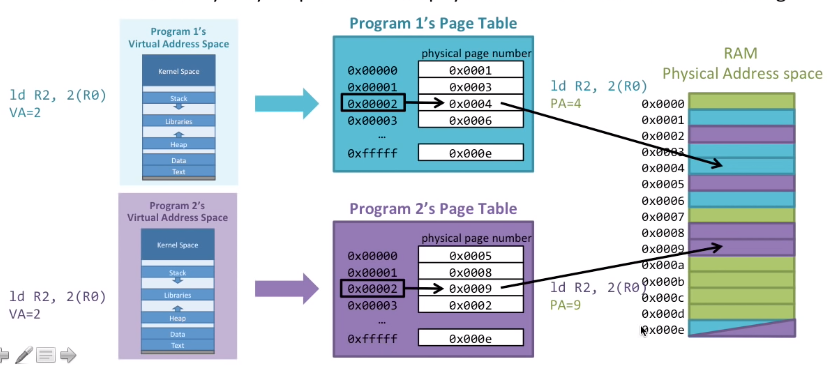
如何实现虚拟内存
如何让虚拟内存有作用呢？因为虚拟内存使得内存使用更加灵活，但也有可能降低计算机系统的效率，我们只需要让虚拟内存机制达到尽可能大的效率即可。
虚拟内存的使用过程中需要做什么事情？
- 访问内存中的页表
- 通过查询页表将虚拟地址转换为物理地址
- 访问RAM相应物理内存中的数据
这个过程中访问了内存2次，访问内存有很多的工作要做，要了解到我们平均每条指令就需要访问1.33次内存（4/3，每三条指令访问4次内存），这部分显得很低效，这是优化的部分之一！
使用虚拟内存有优点，因为有“无限制”的程序和内存（每个程序都有地址空间，内存页可以换入换出），可以保护程序内存实现隔离，使用内存变得很灵活；但使用虚拟内存也会带来很昂贵的资源消耗，每个内存操作都需要查询页表，而且需要访问两次内存（1次页表访问、1次内存物理地址（访问RAM数据）访问）
如何更快地完成虚拟地址到物理地址的转换
- TLB
因为页表的访问是必须的，所以不可能减少这一部分工作。那我们可不可以通过软件来实现？我们知道这又增加了指令条数，也就增加了内存访问次数。那可不可以通过硬件来实现？添加一个缓存Cache。我们称这个Page Table Cache为Translation Lookaside Buffer(TLB)。他的工作机制如下图
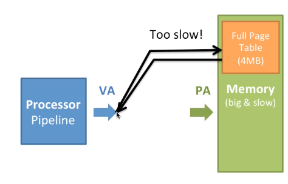
最初，通过访问RAM中的页表来将虚拟地址转换为物理地址，这是非常慢的操作。
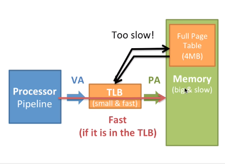
我们通过访问TLB缓存来获取虚拟地址对应的物理地址这是十分迅速的，因为访问速度比RAM快，这非常像一个Cache。如果想让TLB非常迅速，TLB就必须尽可能小。我们通常将TLB分离成指令页缓存（iTLB）和数据页缓存（dTLB），比如现代intel所生产的，每一页4KB，一共有64个页表入口PTE，或者是每一页2MB，32个PTE，都是4路关联（4路组关联，区别于全关联）
全部页表有1M个PTE，但是TLB里只有64个，这个差别很多大，这样访问页的时候如果在TLB里那就会变得很快。
- 页在RAM中
- PTE在TLB
- 最快
- 1个周期用于地址转换，然后访问RAM或cache中的数据
- PTE不在TLB
- 较慢
- 20-1000个周期从RAM中加载PTE到TLB，然后访问RAM数据
- PTE在TLB
- 页不在RAM
- PTE在TLB（几乎不可能，因为最近不经常使用的内存页被置换到硬盘，所以TLB在这段时间内也被置换了）
- 很慢
- 大约80M周期从硬盘加载到内存
- PTE不在TLB
- 比很慢还慢一点（o(￣︶￣)o）
- 20-1000个周期地址转换，这时知道内存页在硬盘
- 大约80M周期从硬盘加载到内存
- PTE在TLB（几乎不可能，因为最近不经常使用的内存页被置换到硬盘，所以TLB在这段时间内也被置换了）
TLB非常的小，怎么让TLB看着大一点，换句话说如何充分利用这么小的一个空间？
- 让每一页变的大一点。例如从64个4KB大小的页（共256KB数据）换为32个2MB大小的页（共64MB数据）
- 添加一个二级TLB，可能比一级TLB大一点，但是有一点慢。大多数二级TLB是一级TLB大小的八倍，当一级TLB的PTE没有命中的话就去二级TLB去查找加载到一级TLB
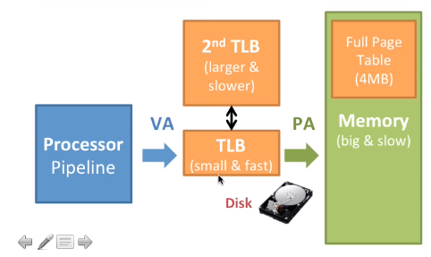
- 让硬件自动填充TLB（因为不会经过操作系统的处理）。这被称为
Hardware Page Table Walk，由MMU来完成。
下面是如何通过TLB将虚拟地址转化为物理地址的例子。
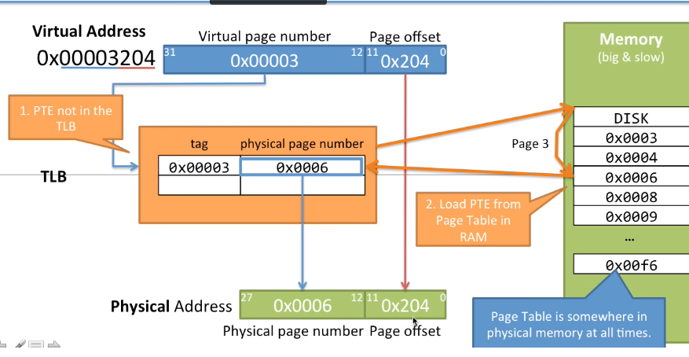
CPU执行指令的时候，使用到了虚拟内存地址0x00003204，需要将虚拟地址转化为物理地址，首先去TLB查找缓存页表，这个例子中发现TLB中没有所要查找的页表入口PTE，然后就需要通过查找RAM中的页表中的PTE，找到了之后就需要将该PTE加载到TLB，然后将虚拟页编号映射到物理页编号（0x00003->0x0006），页内偏移直接使用，最终获取物理地址0x0006204。
下面再看一个PTE在TLB中的例子。
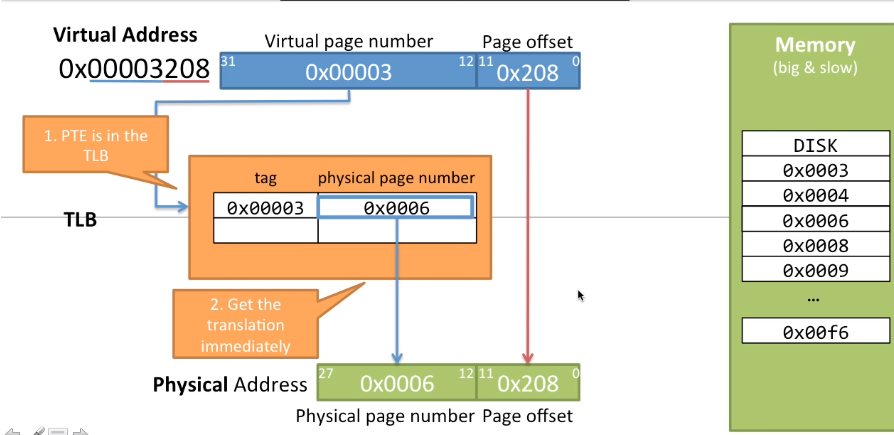
这个例子中CPU中使用虚拟地址0x00003208，首先通过虚拟页编号到TLB中去找，虚拟页编号0x00003，发现该页在TLB中，那就直接转化为物理地址。
下面又是一种情况，当所查找的页不在TLB中且TLB中满时需要做什么，需要将TLB中选取一个PTE剔除以释放空间
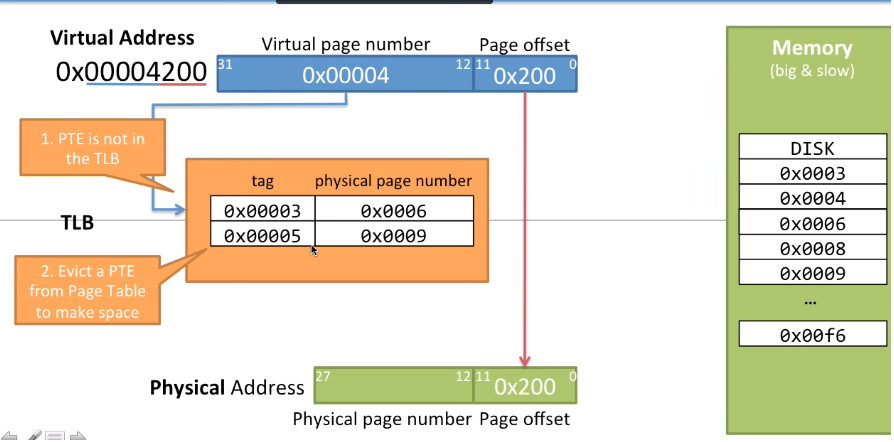
当所需要的页不在RAM中时会发生什么？CPU使用虚拟地址0x00000860，发现页编号0x0000不在TLB中，然后去RAM页表中查找，发现所需物理页在DISK中，然后就需要将DISK中数据加载到RAM中并更新RAM中的页表，然后将页表中对应的PTE加载到TLB中，将虚拟页号转换为物理页号获取物理地址。
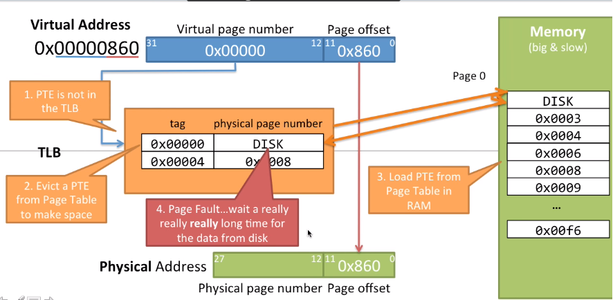
- 多级页表
多级页表是使优化地址转换的另一方法。首先我们考虑一下页表的大小，虽然我们使用了4KB大小的页来减少页表中PTE中的数量，但对于32位大小的虚拟地址空间来说还是会有1M个PTE，每个PTE大约占4B（20位物理地址，还有其他的权限标志位等）。总共4MB。但是我们每个程序都需要一个页表，假设我们有100个程序在运行，那内存中就需要有400MB来维护各个程序的页表！还有一点，我们无法将页表换出到DISK硬盘中，因为我们需要通过页表来获取实际RAM物理地址，如果页表不在RAM中那我们就没有办法找到页表了（因为我们需要页表进行地址转换，其他设备的数据都是通过页表加载到内存并更新页表）。
那怎么解决这个问题呢？
我们虚拟内存的实现是通过添加一个中间件的思想实现的，那我们可不可以再添加更过的中间件来处理这个问题，答案是肯定的，使用多级页表。
下图是一个例子。
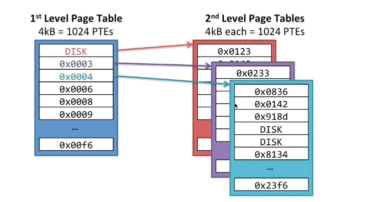
这个例子中使用了二级页表,一级页表中存了1024个4KB的页的PTE，每个PTE中物理页编号指向的是一个二级页表，这个页表对应存储的才是真正数据对应的物理页。对于每个程序，每个二级页表有1024个PTE，一共有1024个二级页表，那么有1024x1024个PTE，刚好就是1M个PTE，和未使用多级页表中的情况是一样的。
所以有了多级页表机制，我们可以把一级以下的页表换出到DISK硬盘中，因为我们可以通过一级页表来获取它，这也说明了一点我们必须要把一级页表存储在RAM中，就像下面这张图。
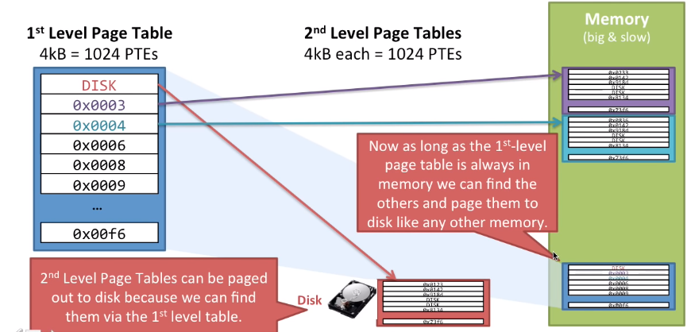
我们来思考一下，使用了多级页表，对于一个32位应用程序我们至少需要多大的内存空间来保存页表呢？4KB+4KB，因为使用了多级页表，一级页表必须存储在RAM中，因为一级页表只告诉我们二级页表的物理地址，所以我们还需要一个二级页表来获取实际的程序数据所在物理地址。一级页表有1024个PTE，每个PTE大约4B，所以一级页表是4KB，二级页表同样如此，所以总共为4KB+4KB，这比4MB好多了！
下面是一个二级页表使用的一个例子。
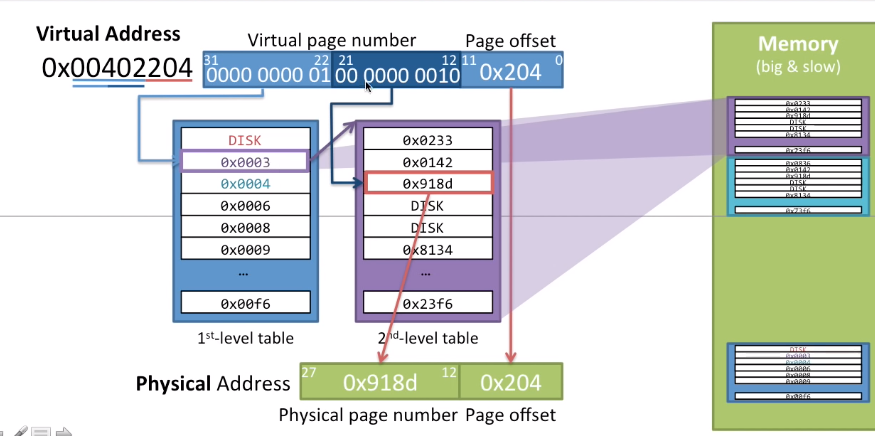
CPU使用到了虚拟地址0x00402204，那就需要将其转换为物理地址，转换过程中将虚拟地址分为两个部分：虚拟页号和页内偏移，虚拟页号又分为一级页表编号和二级页表编号。两级页表分别使用虚拟页号的一半（10位），对于虚拟地址0x00402204，一级页表编号N1是0000 0000 01，二级页表编号N2是00 0000 0010，首先使用N1查询RAM中的一级页表得到二级页表的物理页地址（一个页刚好是4KB，二级页表的大小），如果页不在RAM中就需要将它加载到RAM中并更新一级页表，然后使用N2查询二级表获取实际数据的物理页地址，如果实际数据的内存页不在RAM中就需要加载到RAM中并更新二级页表，最终通过物理页地址和虚拟地址的页内偏移得到了最终的物理地址。
小结一下：
- 每个运行的程序需要一个一级页表存储在RAM中，这样可以获取低级的页表以获取实际数据的物理页。
- 需要一个二级页表存储在RAM中，这样我们可以翻译程序的某些地址，随时切换。
- 使用两级页表共同完成地址
VA->PA的转换 - 高10位地址用于索引一级页表的PTE
- 接下来的10位用于索引二级页表的PTE
- 我们可以置换页表中的一部分到DISK硬盘中
虚拟内存和高速缓存Cache
这一部分讨论有关TLB转译后备缓冲区和高速缓存Cache的交互问题。
我们通常有两种方式来将TLB和Cache来交互：
- 物理缓存（
Physical Cache），Cache使用物理地址（比较慢，访问cache之前必须做一次TLB地址转换，假设TLB转换需要1个周期、物理地址读取Cache需要1个周期）
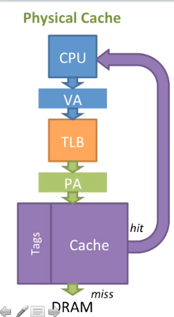
- 虚拟缓存（
Virtual Cache），Cache使用虚拟地址直接获取缓存数据（很快，1个周期），不必进行地址转换，如果Cache没有命中才会发生地址转换。
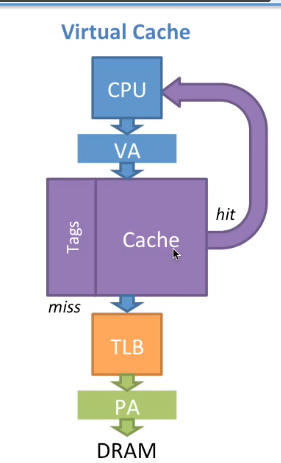
对于虚拟缓存来说，两个程序不能共享虚拟缓存，因为虚拟缓存使用的是虚拟地址，虚拟内存的程序隔离机制无法起作用（因为地址没有转换），这也是虚拟缓存的一个问题。我们也可以简单地解决这个问题，方法就是不仅仅使用虚拟地址，再添加一个标志位用于区分是哪一个应用程序（比如PID）。
有没有两全其美的方法，访问Cache的同时访问TLB，仍然可以使用虚拟内存的隔离机制。
- 还是使用虚拟地址VA访问Cache，cache数据记录中有一个物理标志PTag，同时通过TLB将虚拟地址VA转换为物理地址PA
- 通过物理标志PTag（缓存数据所在的RAM物理地址）和TLB获取的物理地址PA比较是不是命中
这只是想法，具体实现还是有些差别，下面一步步说明。
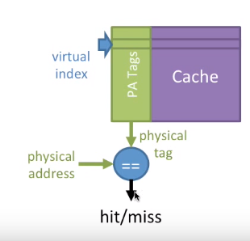
这种访问我们称之为虚索引实标签缓存（Virtually Indexed,Physically Tagged），这是当今处理器中最常用的一级缓存。
这种缓存利用了页面技术的一个特征，即虚拟地址和物理地址享有相同的页内偏移值（page offset）。(Wikipedia)
- Cache通过页内偏移（虚拟和物理是相通的）索引
- 用物理页面号做标志
这样我们既实现了使用虚拟地址访问Cache（快速，不用地址转换），又实现了虚拟内存隔离保护机制（物理地址做标志）。
这种技术的一个缺点是，在使用直接匹配缓存的前提下，缓存大小不能超过页面大小，否则页面偏移范围就不足以覆盖缓存索引范围。这个弊端可以通过提高组相联路数来改善。(Wikipedia)（待完善）
总结一下：
- TLB地址转换和查询Cache同时进行
- 使用虚拟页号进行地址TLB转换
- 使用虚拟地址偏移量进行cache索引
- 通过TLB获取了物理页号
- 通过Cache获取了物理标志（物理页号）
- TLB转换得到的物理页号和物理标志
PA Tag相等说明缓存命中。
这种方式快速的原因是地址转换和cache索引同时进行，安全的原因是Cache只有在物理地址匹配的情况下才会命中。
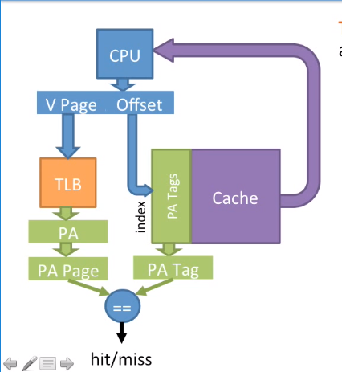
总结
以上便是对虚拟内存的学习和总结，可能还有一些地方会有错误或者知识点漏洞，希望读者可以热情的提出issue。如果还有不理解的地方可以查阅文章末尾我所参考的一些资料，谢谢阅读！
参考资料
引用作品
- David Black-Schaffer.(2014).Virtual Memory
引用文献
- Aniruddha-Tapas.(2014).Operating Systems Notes
- wikipedia.(2018).CPU Cache